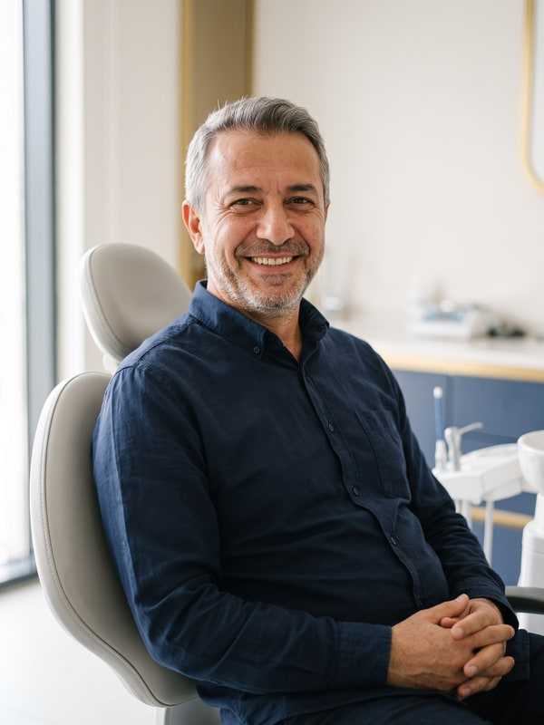

Before deciding on a treatment, everyone wants to know the same thing: "How will this
work for me?" The four journeys below describe how implant, zirconia, veneer and teeth whitening
treatments typically unfold at our clinic — from that first phone call through to your final check-up.
Information: These narratives are illustrative; they do not describe any specific
patient and are not a patient review or an account of patient experience. The process and outcome of
every treatment vary from person to person; the decision is made following a clinical examination.
Implant

Illustrative image
A Comfortable Smile Again: The Implant Journey
TR: Yeniden Rahat Bir Gülüş: İmplant Yolculuğu
Most guests who contact us about implants say some version of the same thing: "I don't smile in
photos any more." A missing tooth affects more than chewing — it affects confidence too. At the first
conversation, our clinic manager Çiğdem talks you through the process step by step, so your
examination is booked with no question marks left in your mind.
At the examination, our founding dentist Yasin studies your bone structure on three-dimensional
tomography scans and draws up a plan tailored to you. If there's enough bone volume, we go straight to
placement; if not, options such as a bone graft are discussed candidly — we don't like surprises. The
implant is usually placed in a single session under local anaesthetic; the question we hear most often
afterwards is, "Was that really it?"
The implant fusing with the bone usually takes a few months; during this time, if you need one, a
temporary solution means you're never left without a tooth, and your check-ups are scheduled and
followed up by Çiğdem throughout. Once the permanent restoration is fitted, the goal is clear: to bite
into an apple without a second thought, to talk without worrying, and to laugh without your hand
instinctively covering your mouth. After that, we ask just one thing: brush the implant like your
natural teeth and don't skip your annual check-ups.
Teeth that have discoloured over the years, or old crowns that have worn down, can make an entire
smile look tired. The zirconia journey begins with an examination by Yasin: how the crowns will sit
against your gumline, their translucency, and a shade and shape that suit your facial features are all
planned together. Choosing the shade isn't a matter of a few seconds in the chair; the match with your
neighbouring teeth is assessed in daylight, from different angles.
Impressions are taken digitally; with your temporary teeth in place, life carries on as normal without
a break. Once the crowns are ready, you'll have a fitting — if there's a detail you're not happy with,
it's corrected before final placement, because changes are always still possible at that stage. The
process is usually completed in two or three sessions, with Çiğdem coordinating every appointment from
start to finish.
The goal is never that "obviously done" look — it's a renewal nobody else notices, one that only you
know about.
When teeth are healthy but gapped, slightly crooked, or simply not the right shape, veneers are often
the option that gives the most visible result for the least intervention. The part of the process
people love most: Yasin prepares a trial design (a mock-up) on your teeth first — so you see the result
in the mirror before treatment even begins. Naturally, it starts with an examination: if there's a gum
health issue or a small cavity, that's dealt with before the veneers go ahead.
Once you give the go-ahead, only a wafer-thin layer is prepared from the tooth surface, and your
veneers are made specifically for you. The process is completed over a few sessions, and Çiğdem plans
the schedule together with you, around your work and travel commitments.
After fitting, small habits like nail-biting or holding a pen between your teeth are talked through
one by one — how long your veneers last depends partly on them too. In the end, the secret to a good
veneer isn't that it makes a statement — it's that nobody notices it at all.
A Fresher Smile in a Single Session: The Whitening Journey
TR: Tek Seansta Tazelenme: Beyazlatma Yolculuğu
The mark that coffee, tea and time leave on the colour of your teeth doesn't always reverse with
regular brushing. At the examination, we first assess the tooth surface; if needed, a scale and polish
is done before whitening — the result is more even on a clean surface. In-practice whitening is
completed at the clinic in a single session of around an hour, under Yasin's supervision: the gums are
protected first, and then the whitening gel is applied in a controlled way.
To avoid sensitivity, before- and after-care advice is planned specifically for you; because the shade
you'll reach depends on your teeth's starting colour, setting realistic expectations matters to us just
as much as the result itself. We ask you to go without coffee, tea and strongly coloured food or drink
for the first 48 hours — a little patience makes the result last longer. You can book your appointment
with Çiğdem in a few minutes; most of our guests pop in on their lunch break and head straight back to
work.
Information: The journey narratives on this page are illustrative; they do not describe
any specific patient and are not a patient review or account of patient experience. Treatment processes
and outcomes vary from person to person; the diagnosis and treatment decision is made following a
clinical examination. Last updated: 30 August 2026 · Content approved by: Dr Yasin [Surname].
📋 Exporting to WordPress
You can paste each story under its related treatment page as a Custom HTML
block, or use the "Full page" block to publish a single Treatment Journeys page. The
illustrative-narrative disclaimer is already included in every block — do not delete it
(required for regulatory compliance). Photos are in the img/ folder (600×800 JPG): upload them
to the WP media library and add one to the top of each story; keep the "Illustrative image"
caption underneath it too.

{kind=link}
{kind=link}
{kind=link}
{kind=link}
{kind=link}
{kind=link}
{kind=link}